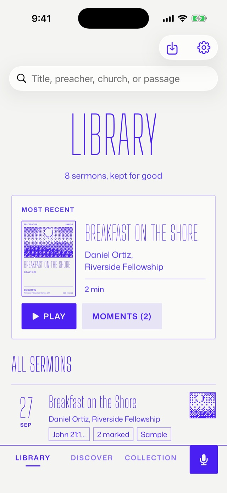
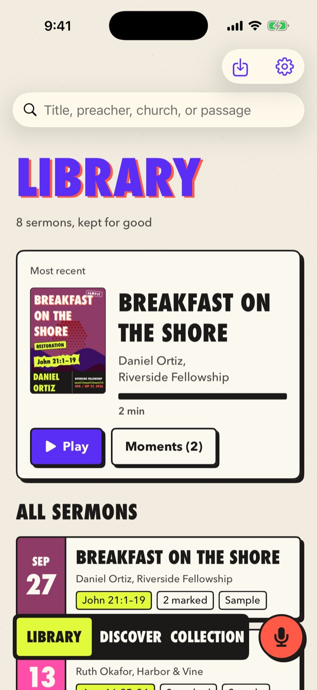
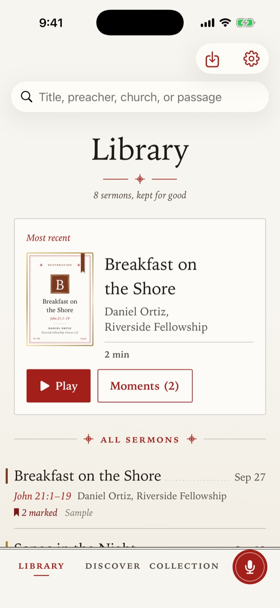
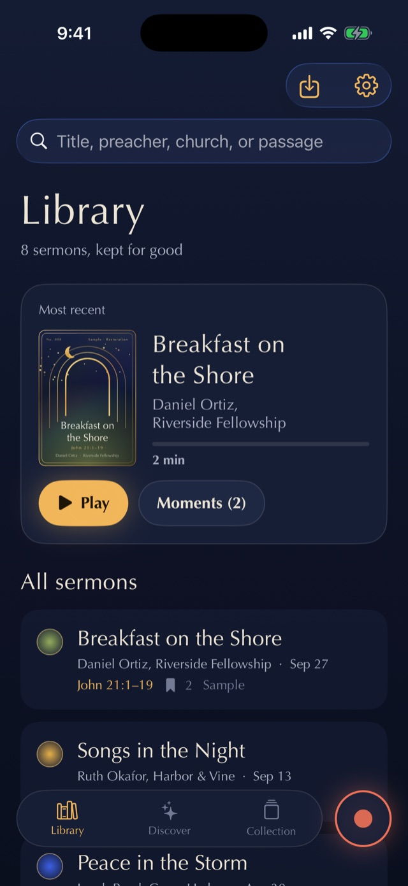
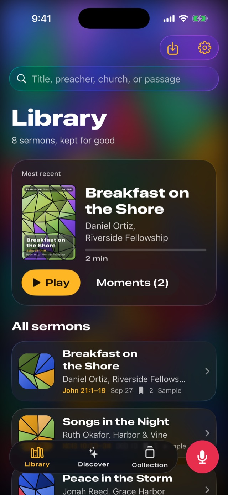

SOWER is an iPhone app for the sermon you just heard. Record it from your seat, come back to the moments that landed, and pass on a card that points back to the message.
Every feature is free. Nothing leaves your phone unless you choose to share it.
One big button to record and another to mark the moment something lands. The recording is saved in durable pieces, so a phone call or a crash can’t take the sermon. A church’s service QR code tells you whether recording is welcome.
Keep it
Come back to what mattered
Your moments sit on the timeline. Takeaways are drafted on your iPhone, labeled as summaries rather than quotes, and each one plays the exact words it came from. Correct the transcript and anything built on it asks to be checked again.
Pass it on
Cards that point back to the message
Every sermon becomes a card. Keep sermons other churches shared, open a free Sunday Pack each week, and see on the Atlas where the messages you’ve kept were preached.
Keep the message
Trade the card
Give a card to a friend or swap one with someone at church. Show a QR code, send a link, or pass it phone to phone nearby. Nothing moves until they accept, and offers expire after a week.
A trade moves the card and nothing else. The sermon stays in both libraries, and your notes, moments, and recording never travel with it. Each card is numbered, and its journey shows only the cities it passed through, only if everyone agreed.
They scan it with their camera, see the card and your note, and choose to accept or decline.
Phone to phone
Nearby
An encrypted, direct connection between two iPhones carries the offer. No account names are broadcast.
Anywhere
Link
Send it in Messages. The page it opens shows nothing private and hands the offer to SOWER.
Five looks, one app
Pick the one that feels like yours
SOWER’s own one-ink look, the one you’re reading now, plus four more: a two-ink church zine, a well-used Bible, a dim sanctuary, and a lit window. Every screen works the same in each, and the app icon can match.

SOWEROne ink on paper

RisoPrinted loud, kept close

RubricSet like a well-used Bible

VespersQuiet enough for the pew

LumenLight through glass
Filmed from the app · Silent · The sermons and churches shown are fictional samples
For churches
Recording isn’t permission to share
SOWER keeps the two separate and puts your church in charge of what goes public. Listeners can record for themselves. Audio is only shared with a grant from you.